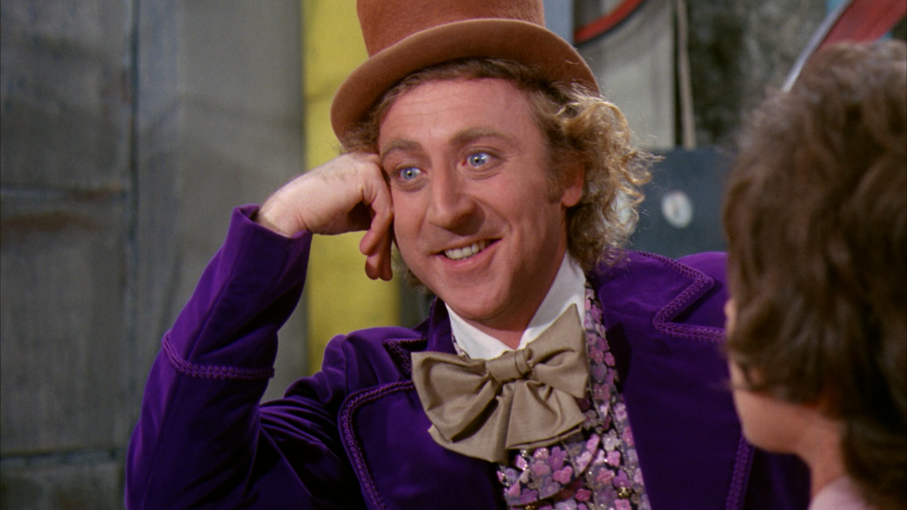
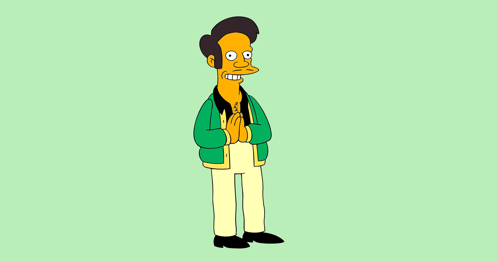

What I think.

The 5 Best Locations in Sydney for Public Crying
2020 has been a great year so far!
-18 August, 2020
Why Snowpiercer is actually a sequel to Willy Wonka and the Chocolate Factory
Also, The Revenant is a sequel to Titanic.
-25 March, 2020
Graphene: The Future of Tech Materials
A simple carbon-based material is at the heart of a key area of tech development: flexible electronics.
-17 September 2019
Cyberviolence: Its Just The Internet
The effect that the internet has had on the world is nothing short of breathtaking. But for some, it stops us from breathing freely.
-28 July, 2019
Thank You Come Again: the 'Apu Problem'
Earlier this week The Simpsons announced the removal of Apu from the show, but the conversation around representation in pop culture is far from over.
-5 December, 2018
See All